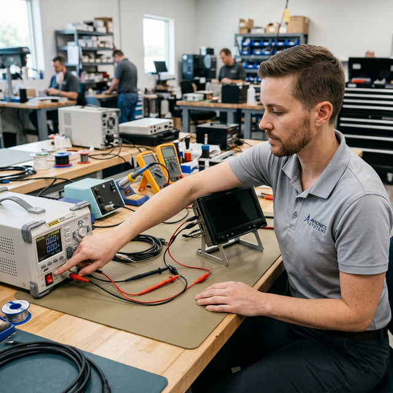

Electrical shock first action
Module Objectives
- Identify the physiological effects of electrical shock, including tetanic contraction.
- Execute the correct sequence of emergency actions when a colleague is actively being shocked.
- Demonstrate the principle of safe separation from energized victim.
- Explain why low-voltage DC avionics systems still present severe shock hazards.
Why Does This Matter?

A coworker is troubleshooting a power supply on the bench when their hand contacts an energized 115VAC circuit. Their muscles lock up and they cannot let go. Your instinct screams "grab them and pull them away." If you follow that instinct, you instantly become the second victim. The correct first action in an electrical shock emergency is wildly counter-intuitive under pressure.
What You Need To Know
An Electrical Shock occurs when the human body becomes part of an electrical circuit. Even low-voltage direct current (DC) systems in avionics (like 28VDC) can deliver enough current to cause severe burns, cardiac arrest, or muscle lock under the right conditions (such as sweaty hands or wet floors reducing skin resistance).
Tetanic Contraction (The "Let-Go" Threshold)
When alternating current (AC) passes through muscles, it can cause them to violently contract and lock up. This is called a tetanic contraction. The victim is physically unable to release their grip on the energized wire or component. They are paralyzed by the current.
The Emergency Response Sequence
When someone is receiving an electrical shock and is still in contact with the circuit, never touch the victim directly. If they are energized, the current will flow through them and into you the moment you make contact, because your body offers a path to ground. One victim becomes two.
You must follow this exact sequence:
- 1. Ensure the area is safe
- Assess the scene rapidly. Do not rush in blindly. Identify the power source.
- 2. Disconnect the Power Source (De-energize)
- Flip the associated circuit breaker, kill the bench power switch, pull the main disconnect lever, or unplug the equipment from the wall. - If you cannot immediately find the disconnect: Use a dry, non-conductive object (like a heavy wooden broom handle or a fiberglass rod) to physically push or pull the victim's body away from the live circuit. Never use metal tools or damp materials.
- 3. Call for Emergency Assistance
- Shout for help to activate the shop's emergency action plan and call emergency services (911). Ensure someone knows exactly where the incident occurred.
- 4. Provide First Aid / CPR
- Only after the power is definitively disconnected and it is verified safe to touch the victim. Begin CPR if the victim is unresponsive and not breathing.
System Visualization
graph TD
A[Witness Electrical Shock Event] --> B[STOP! Do Not Touch Victim]
B --> C{Can you reach the power disconnect?}
C -- Yes --> D[Turn OFF Power Source]
C -- No --> E[Find Dry, Non-Conductive Object]
E --> F[Physically Separate Victim from Circuit]
D --> G[Verify Victim is De-energized]
F --> G
G --> H[Call for Emergency Medical Help]
H --> I{Is Victim Responsive/Breathing?}
I -- No --> J[Initiate CPR / AED]
I -- Yes --> K[Treat for Shock / Burns and Monitor]
style B fill:#ef4444,stroke:#7f1d1d,stroke-width:2px,color:#fff
style D fill:#22c55e,stroke:#14532d,stroke-width:2px,color:#fff
On The Job
When working with live equipment, always know exactly where the main breaker or bench kill switch is located before you begin your task. In an emergency, if you witness a shock, fight the instinct to grab the person. Power OFF first. If you must use force to separate them, use the nearest dry wooden or plastic object.
Reference Terms
Electrical Shock First Aid
For an electrical shock victim: (1) FIRST ensure the area is safe, (2) disconnect the power source before touching the victim, (3) call for emergency assistance. Never touch a victim who may still be energized.
Electrical Shock
The physiological reaction or injury caused by electrical current flowing through the human body.
Tetanic Contraction
Involuntary, sustained muscle lock caused by electrical current, making the victim unable to voluntarily release their grip.
De-energize
To disconnect or completely remove all sources of electrical power from a circuit or system.
Path of Least Resistance
The principle that electrical current will flow through the most conductive route to ground, which readily includes the human body.
Assessment Check
Never touch a shock victim who is still energized — disconnect the power source first, or you become the second casualty. --- ---